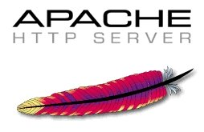

proporciona soporte para los proyectos de software de la Comunidad de código abierto de Apache, que proporcionan productos de software para el bien público.
mediante procesos colaborativos basados en el consenso, una licencia de software abierta y pragmática y el deseo de crear software de alta calidad que sea líder en su campo.
no simplemente un grupo de proyectos que comparten un servidor, sino una comunidad de desarrolladores y usuarios.
La misión de la Apache Software Foundation (ASF) es proporcionar software para el bien público. Hacemos esto proporcionando servicios y soporte para muchas comunidades de proyectos de software con ideas afines de personas que eligen unirse al ASF.
Establecida en 1999, la ASF es una organización benéfica 501 (c) (3) de EE. UU., Financiada por donaciones individuales y patrocinadores corporativos. Nuestra junta de voluntarios supervisa más de 350 proyectos líderes de código abierto, incluido el servidor HTTP Apache, el software de servidor web más popular del mundo. El ASF proporciona un marco establecido para la propiedad intelectual y las contribuciones financieras que, al mismo tiempo, limita la posible exposición legal para nuestros comprometidos de proyectos. A través del proceso meritocrático de ASF conocido como "The Apache Way", más de 730 Miembros individuales y 7,000 Comprometidos colaboran con éxito para desarrollar software de nivel empresarial de libre acceso, beneficiando a millones de usuarios en todo el mundo: miles de soluciones de software se distribuyen bajo la Licencia Apache; y la comunidad participa activamente en las listas de correo de ASF, las iniciativas de mentoría y ApacheCon, la conferencia oficial de usuarios de la Fundación, las capacitaciones y la exposición.
Anteriormente conocido como el Grupo Apache, el ASF se incorporó en 1999 como una corporación sin fines de lucro basada en membresía para garantizar que los proyectos Apache continúen existiendo más allá de la participación de voluntarios individuales. Las personas que han demostrado un compromiso con el desarrollo colaborativo de software de código abierto, a través de la participación sostenida y las contribuciones dentro de los proyectos de la Fundación, son elegibles para ser miembros de ASF. A una persona se le otorga la membresía después de la nominación y aprobación por la mayoría de los miembros existentes de ASF . Por lo tanto, el ASF se rige por la comunidad a la que sirve más directamente: las personas que colaboran en sus proyectos.
Los miembros de ASF eligen periódicamente una Junta de Directores para administrar los asuntos organizativos de la Fundación, según lo acordado por los Estatutos de ASF . La Junta, a su vez, nombra a varios oficiales para supervisar las operaciones diarias de la Fundación. Una serie de registros públicos de nuestra operación están disponibles para la comunidad. Se encuentra disponible una explicación más detallada de cómo funciona el ASF en términos de las operaciones diarias, y el objetivo del proyecto de Desarrollo comunitario de Apache es ayudar a los recién llegados a conocer más sobre la Fundación de software Apache. Los proyectos individuales de Apache están, a su vez, gobernados directamente por los Comités de Gestión de Proyectos (PMC, por sus siglas en inglés) compuestos por personas que han demostrado mérito y liderazgo dentro de esos proyectos. Hay descripciones detalladas de los modelos de ASF y gobernanza del proyecto .
Realizado por @Carolyne Fernandez Prada